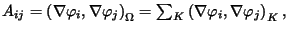
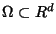
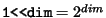

(Taken from the Proceedings of the 16th IMACS World Congress,
Lausanne, Switzerland, 2000)
Wolfgang Bangerth
Institute of Applied Mathematics,
University of Heidelberg, Germany.
Email:
wolfgang.bangerth@iwr.uni-heidelberg.de
The idiom above is one of several modern aspects of C++ used in the design of the finite element library deal.II developed at the University of Heidelberg. We will give a sketch of its implementation and examples how it is used.
Developing modern finite element codes involves a significant amount of software management tasks. While computations on uniform grids using multi-linear elements can be done with programs with a few hundred lines of code and in almost any programming language, it is already a non-trivial task to write a multigrid solver on uniformly refined grids. Due to the relatively simple data structures possible for globally refined grids, such codes have most often been written in Fortran and comprise several thousands to a few ten thousands of lines of code. On the other hand, modern finite element codes offering adaptively refined grids, various different finite elements and support for a variety of applications in several different space dimensions, can quickly exceed 100.000 lines of code. Most libraries offering support for these topics are written in either C++ or Java (there are too many finite element packages written in these languages to give a comprehensive list; we refer the reader to [1] for an overview).
C++ and Java are often selected due to the lack of support for complex and indirected data structure in Fortran 77. However, they also offer far better support for the software management challenges involved with packages of this size. For example, object orientation and generic programming allow for code reuse.
In this paper, we will discuss an approach to use certain features of C++ to
enable the programmer to write library components and applications in a way
that is essentially dimension-independent. The reasons for such an approach
are two-fold: first, three-dimensional simulations are computationally
expensive; developing algorithms in two-dimensional programs that can then be
simply re-compiled for 3D saves significant parts of the development time
since such programs need not be written twice. Secondly, it is often simpler
to transfer mathematical ideas into programs if we can think in terms of
cells and faces, for example, rather than
quadrilaterals and lines. This is due to the fact that one
usually develops finite element theory in a dimension-independent way. For
instance, assembling a matrix (here for Laplace equation) is usually written
as

where
is the domain and K are the cells of a triangulation of
.
Likewise, error indicators are often evaluated by integration over
faces of cells. To name only one simple example, the error indicator
by Kelly et al. [5] has the form
The layout of the remainder of this paper is as follows: in Section 2, a brief introduction into templates in C++ is given. In Section 3, we explain the basics of the use of templates for dimension-independent programming in deal.II. Section 4 details how so-called traits classes can be used to make dimension-independent programming transparent, and Section 5 shows applications of dimension-independent programming.
Templates are a way by which generic programs can be written in C++ (see [6]). For example, a function template might look like this:
template <typename number>
number sqr (const number x) { return x*x; };
This template specifies a family of functions that return the square of
its argument. It is not a function in itself,
since the data types of the parameter and the return value are not
fixed. However, it is a template from which the compiler can generate
a function, if it is told to identify the template type name number
with an actual data type. For example, let x be a variable of type
double, then calling sqr(x) will lead to the following
actions on the compiler's side:
Just as for functions, C++ allows the declaration of templatized data types. A typical example is an array of elements of a data type that is only fixed later. For simplicity, we show how a vector with three elements could look like:
template <typename number>
class Vector3 {
number elements[3];
... // other member variables and functions
};
If later we want to use such a data type for a variable, we have to specify
which data types the elements of the vector shall have:
Vector3<double> double_vector;Unlike in the case of function templates, we have to specify the data type explicitely, with which number shall be identified. The reason, of course, is that upon declaration we have to specify a full data type, while when calling a function the data type of the parameters are already known, so the compiler can usually deduce the function template types from the parameter types.
Here, again, at the time we write the declaration of double_vector, the compiler knows all data types and can compile the template class Vector3 into a true data type; a variable of type Vector3<double> will thus have a size of 24 bytes, while a Vector3<char> will only take three bytes. Furthermore, the compiler is able to optimize accesses to elements of the vector, since the offsets of the data elements are known at compile time due to the fact that the size of the elements is available.
For later reference, we note that template classes can be specialized. For example, it is wasteful to store boolean values in classes like Vector3 above, since one could as well store the three values as a bit field. This does not require us to introduce another concept, since C++ allows us to specialize Vector3<bool>:
template <>
class Vector3<bool> {
char bitfield;
...
};
Whenever an object of type Vector3<bool> is required, this
specialization is used, while in all other cases, the general template is
taken. It is noted that the specialization needs not have the same functions
and member variables; the general template and the specialization are entirely
separate entities that happen to have the same name.
One of the less well known features of C++ which we will use extensively below, is that C++ also allows template parameters to be integral values rather than types. For example, assume we want a vector of variable length, for which the length is known at compile time, however. Then, the following class template might be useful:
template <unsigned int N>
class Vector {
double elements[N];
...
};
If we now declare a variable of type Vector<3>, the compiler will
instantiate an actual class from the template which has exactly three
elements. Again, at the time the class is compiled, the size is known and the
compiler can optimize computations involving the template parameter
N. If the class above had a function that computes the square of the
l2-norm of this vector, it would probably look like this:
template <unsigned int N>
double Vector<N>::norm_square () const {
double tmp = 0;
for (unsigned int i=0; i<N; ++i) tmp += sqr(elements[i]);
return tmp;
};
A good compiler will usually unroll the loop if N is small, since
then the overhead of the loop is significant. The compiler can do so, since
the length of the loop is known at compile time, and most modern compilers
actually perform this optimization.
Within the deal.II finite element library, extensive use is made of value templates as shown above. At the foundation of the library, there exists a template class Point<dim> very much like the Vector<N> above. It denotes a point in a dim-dimensional space. Starting from this class, a first step towards a triangulation of lines, quadrilaterals, or hexahedrons (depending on the dimension we work in) could be the following class:
template <int dim>
class Cell {
Point<dim> vertices[1<<dim];
...
};
Here, each cell stores the coordinates in dim-dimensional space of
its

vertices. A simple triangulation would
contain a list of cells:
template <int dim>
class Triangulation {
list<Cell<dim> > cells;
};
list, like the Vector3 above, is another data type that
accepts the type of the elements it should store as template parameter.
In fact, the data types describing a triangulation in deal.II are much more complicated than shown here. For example, rather than a Cell data type, we have classes that describe objects of dimension structdim in a space of dimension spacedim:
template <int structdim, int spacedim>
class TriaObject {
Point<spacedim> vertex (unsigned int vertex_number);
...
};
An object of type TriaObject<2,3> would thus describe a quadrilateral
in a three-dimensional domain, i.e. a face of a cell. It has a function that
returns the positions of one of the vertices (which are of data type
Point<spacedim>), and it could also have a function that returns a
pointer to one of its faces, which itself is of type
TriaObject<structdim-1, spacedim>.
For cells, the structural dimension is the same as the one of the embedding space. Furthermore, in a triangulation they have more properties than other objects of arbitrary dimension; for example, they have a fixed number of neighbors. It might therefore be useful to derive the cell class from the class with structdim equal to spacedim:
template <int spacedim>
class Cell : public TriaObject<spacedim,spacedim> {
Cell<spacedim> * neighbor (unsigned int number_of_neighbor);
TriaObject<spacedim-1,spacedim> * face (unsigned int number_of_face);
};
It is stressed again that at the time of compilation all template
parameters are known, such that no run time checks on their values have to be
performed. Furthermore, all data types are exactly known, so no casting from
abstract base classes to actual classes is necessary, thus enhancing type
safety and by this improving maintainability of the code.
Rather than the pointers to cells and faces above, deal.II uses iterators. These are principally like pointers, but are significantly more flexible. In particular, while the operator ++ applied to a pointer moves it to the next consecutive element in memory, an iterator may overload that operator to let the result point to any other reasonable location in memory, usually where the next cell is located (which may not be the consecutively next location in memory). In deal.II, iterators are also used to present different views on objects. For example, we have iterators to cells which move to the next cell when increased, but also iterators to active cells which move to the next cell that is not refined any further; for the latter operation, it might be necessary to skip several non-active cells in between. Although the iterators operate on the same objects, their ranges represent different parts of the collection of cells.
Using classes like TriaObject<2,3> is unhandy, in particular since in actual implementations, there are several such classes, and changes to the internals of the library might require changes to the names or template parameters of these classes. Also, in deal.II iterators to other objects are declared using a complex framework of templates; for example, an iterator to active quadrilaterals might be of type TriaActiveIterator<2,Cell<2> > or TriaActiveIterator<3,TriaObject<2,3> >, depending on the space dimension (here 2 or 3, respectively). Finally, iterators to quadrilaterals are pointless in one space dimension.
For this reason, deal.II uses traits classes. They are used to
represent typedefs that bind alias names dimension-dependently to actual
classes, using explicit specializations of classes. For example, the iterators
above can be defined as follows, disabling support for faces in 1D and mapping
cell iterators to the respective classes:
template <> class TriaIteratorTraits<1> {
typedef TriaActiveIterator<1,Cell<1> >
active_cell_iterator;
typedef void * active_face_iterator;
};
template <> class TriaIteratorTraits<2> {
typedef TriaActiveIterator<2,Cell<2> >
active_cell_iterator;
typedef TriaActiveIterator<2,TriaObject<1,2> >
active_face_iterator;
};
This way, we can refer to the type TriaIteratorTraits<dim>::active_cell_iterator and get whatever constitutes an iterator to a cell. Note that in this case, no general template was declared since there is nothing that might hold for all dimensions for which we have not provided specializations.
The intent of traits classes is that we are now in the position to write functions like the following, that might for example be used as a simple way to output the vertices of all cells:
template <int dim>
void write_cells (Triangulation<dim> &tria) {
TriaIteratorTraits<dim>::active_cell_iterator cell;
for (cell=tria.begin_active(); cell!=tria.end(); ++cell)
for (int v=0; v<GeometryInfo<dim>::vertices_per_cell; ++v)
cout << cell->vertex(v) << endl;
};
Likewise, the main loop to compute the error indicator of Eq. ( )
could look like this:
)
could look like this:
template <int dim>
void ErrorIndicator<dim>::compute_indicators () {
QGauss3<dim-1> quadrature_formula;
TriaIteratorTraits<dim>::active_cell_iterator cell;
for (cell=tria.begin_active(); cell!=tria.end(); ++cell)
for (int f=0; f<GeometryInfo<dim>::faces_per_cell; ++f)
integrate_on_face (cell->face(f), quadrature_formula);
};
It is stressed that in these example, the actual data type of cell and cell->face() differs depending on the space dimension of the triangulation object, so the actual vertex() function that is called is also dependent. Finally, the number of vertices we print per cell is variable. All this information is available at compile time, however, once the compiler generates an actual function from the template, so the compiler may choose to unroll the inner loop due to its known length.
Although the types of the object we work with are different for different space dimensions, we are able to write the function in a dimension-independent way. In fact, once dimension-dependent classes such as TriaObject or Cell have been defined, it is possible to write almost all algorithms in a dimension-independent way. The actual dimension-dependent core of the deal.II library is rather small (less than ten per cent) and almost all recent extensions are written dimension-independently.
It is clear from the above that all classes and algorithms that might have different results in different dimensions will need to depend on the dimension being passed as template parameter. However, most of them need still to be implemented only once, as a general template, rather than once for every space dimension as would be the case with more `traditional' approaches where we would have iterator classes active_cell_iterator_1d, active_cell_iterator_2d, etc, and in which algorithms such as the one above would be copied with slight modifications to adjust for different space dimensions.
In our approach, such functions are written only once, since they can get the
data types (such as iterators) and values (as the number of vertices per cell)
that actually differ between space dimensions using the traits classes
explained above. On the other hand, if algorithms really differ between space
dimensions, we are free to explicitely specialize them. For example, in some
cases algorithms for one-dimensional problems differ slightly from the general
case since the faces of cells (i.e. the nodes of the subdivision of the
interval on which we solve a problem) have no extension. Thus, an algorithm
implementing Eq. ( ) would be written once for the special case
in 1D and once as general template for all other dimensions.
) would be written once for the special case
in 1D and once as general template for all other dimensions.
However, as noted above, explicit specializations or algorithms are the exception and not often necessary outside the library itself. For example, in one of the applications of the author (see [4]) comprising of approximately 20.000 lines of code, there is exactly one function that is explicitely specialized, namely the function that sets up the coarse grid for the triangulation of the domain. All other functions are dimension-independent and can be compiled for whatever dimension we want to solve in presently. In fact, when support for 3D became available, it took approximately one day of work to adapt the program to run in 3D as well, in addition to 1D and 2D where it was already used before.
We have shown how value templates and traits classes can be used in C++ to allow for basically dimension-independent programming. This leads to programs that can be compiled for several different space dimensions without significant run time overhead and without violations of the strong typing system of C++. Thus, such programs remain maintainable despite their complexity. We also believe that they are good examples of the code reuse pattern of object oriented programs, since the same algorithms developed for one space dimension can be used without modification for other dimensions as well.
What is also important is that although the internals of the deal.II library are necessarily complex, and although the details of instantiation of value templates are usually not known to most programmers, the idiom described here seems to be intuitive to beginners. We have observed that dimension-independent programming styles are readily adopted by students even if they don't have a full understanding at the start of the semantics of the details of the C++ constructs used in their programs. The actual internals of the library including most templatized objects like the TriaObject class are well shielded from the user by the traits classes, and are not used in applications directly.
To the experienced user of deal.II, dimension-independent programming is an efficient way to write programs to test algorithms in lower space dimensions and still run in higher dimensions as well. Here, `efficient' is interpreted both in terms of run time as well as of time to write a functional program. Especially the latter is of major importance in modern numerical analysis in research where algorithms are getting increasingly complex and the time to implement an algorithm is often more significant than the time to actually execute it.
Acknowledgments Present development and maintainance of deal.II is a joint effort of several people at the University of Heidelberg, the University of Minneapolis, and elsewhere. The author acknowledges the support by the German Research Association (DFG) through the Graduiertenkolleg and the SFB 359 at the IWR, University of Heidelberg.
Wolfgang Bangerth